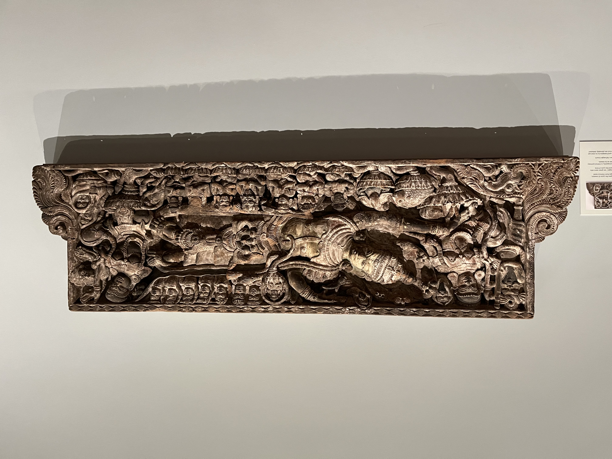
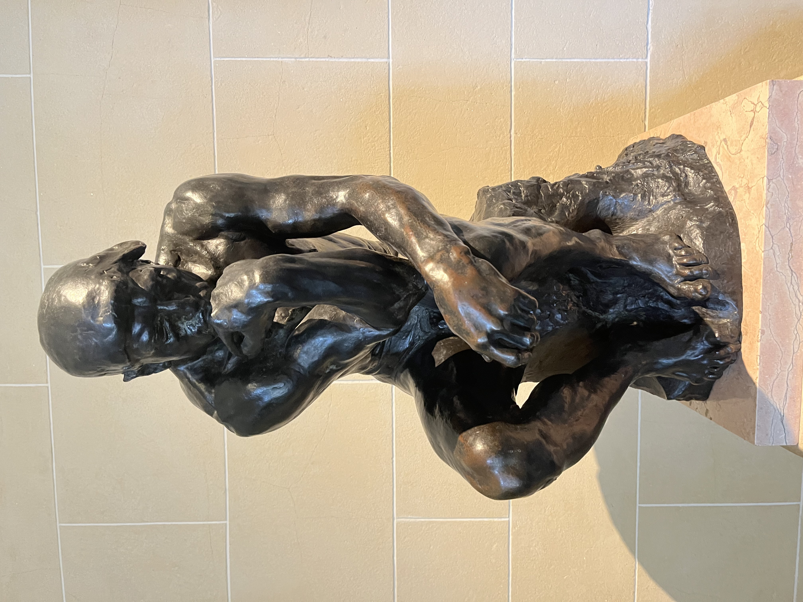

well，近日去的费城艺术博物馆很是不错，本来就是打算陪朋友随便走走，没想到收获颇多。这个博物馆算是我这么多以来，见过的中世纪文物最多最大的一个，它收集了很多柱头（这很棒），甚至整体搬迁了好几个房间，这真的没想到。其次就是印度教文物吧，收获了些新知。最最意外之喜的就是汝窑了，雨过天青云破处，好家伙，居然在这又一次见到，可惜品相没有MFA的好，底部甚至有康熙的诗，md我现在理解为什么那么多人骂康熙了，汝窑你也落笔啊。不喜欢的地方是欧洲艺术是按时代划分的而不是按发展脉络，不太好follow。还收录很多英国的新古典主义、浪漫时期的作品，可惜精力不济没法驻足欣赏了。
最后梵高的早期向日葵和罗丹的the kiss、手、思想者也是终于见了一面，此行不虚啊。
杂记
盔甲是好盔甲，但武器果然越花哨的实战可能性越低。
filed, punched, chased, blued, and gilded steel damascened in gold and encrusted with silver beads;
[shaft] textile and wood replaced
Made in Italy
For the guard of Pope Paul V (Camillo Borghese, ruled as pope 1605 to 1621)
Mideval
portal
The architectural elements in this gallery characterize those made for palaces in Renaissance Florence. The sculpture surrounding the doorways — two depicting flying angels holding coats of arms (a motif adapted from ancient Roman tomb decorations) and one showing the cross of the captain of the people (a symbol of Florence) - come from unidentified buildings. The doors leading to gallery 300 consist of wood frames from the 1400s.
Cloister 回廊
At the heart of every European medieval monastery stood a cloister, an arched walkway surrounding a courtyard. The museum’s cloister is based on one constructed in the 1200s for the Abbey of Saint-Génis-des-Fontaines in the Roussillon region of southwestern France. It includes sculpture originally from the abbey, medieval elements from the province, and reproduction carvings made in the 1900s.
Medieval cloisters served both practical and spiritual purposes. Most were open air, with a garden in the courtyard. At Saint-Genis-des-Fontaines, the outer walkway held doors that opened into the refectory (dining hall), the chapter house — where the abbey was administered - and the church. In addition to functioning as a connecting space, the courtyard and walkway were used by the religious community for processions, services, and communal readings. The cloister also provided an area where individual monks could engage in private prayer and contemplation.
柱头 Capticals
The objects on view in this gallery evoke the rich architectural decoration of a medieval church. Dominating the room is the massive entryway of the Abbey Church of Saint-Laurent, and the six capitals (crowning elements of columns) to the left and right of this panel are from the same church, created to be embedded in its interior walls.
In addition, the intended location of architectural details could impact their subject and style. Both of the capitals to the right probably came from the altar end of the church, where they stood on columns some ten feet tall, about twice as high as shown here. And those at left have large forms and deep carving that would have appeared smaller and more delicate to worshipers in their original placement, which was forty feet above the nave of the church.
（The above) If you look closely, you can observe stylistic differences in the carving of the capitals. The construction of the Saint-Laurent church took place over many years, bringing new artistic approaches as time passed. The two capitals to the right (on the other side of the doorway) may span a period of twenty-five years, from 1100 to 1125, and the four to the left could be even later, dating from around 1125 to 1150.
Capitals (four), probably from the Abbey Church of Saint-Laurent, with Harpies; Vines and Rosettes; Vines; and a Man Flanked by Leopards
The art made to adorn churches of the Middle Ages frequently featured animals and fantastic creatures, and because these animals often had widely known symbolic meanings, they could be used to teach moral lessons.
For example, the capital topping the very tall column directly to your right depicts birdlike figures known as harpies (now faceless from being exposed to the elements). (Above)
In Greek mythology harpies were first considered destructive winged spirits, and they later evolved into ugly half-bird, half-woman creatures called sirens. Since sirens were known to be cruel temptresses, their presence may have served as a warning to viewers against the temptations of the flesh.
painting
The Crucifixion, with the Virgin and Saint John the Evangelist Mourning Around 1460
Rogier van der Weyden Netherlandish, 1399/1400-1464
Evoking Sorrow with Paint
The genius of Rogier van der Weyden is revealed in his ability to convey emotion.
Here, the Virgin and John the Evangelist shed translucent tears over the death of Christ. The theme is compassion, and the mourners openly display their grief. The wall behind the figures heightens the painting’s emotional impact, as it changes the viewers relationship to the scene, forcing a direct and immediate response.
Why Two Panels?
This painting likely served as the exterior decoration of the wings of an altarpiece, with Mary’s blue robe connecting the two panels. They would have been visible when the altarpiece was closed, the bright red hangings drawing viewers’ attention through the darkness of the church.
Hindu
Gana
Late 900s or early 1000s
All three of the sculptures on this wall depict a baby-bodied male related in form and meaning to early Indian nature spirits called yakshas. Later texts more often identify such figures as ganas (soldiers of the god Shiva). Throughout the ages they have appeared on temples as if physically holding up the building, or at least parts of it, reflecting the yaksha’s role as a guardian or support of the earth and its riches.
This gana’s raised arms would have supported a huge, curved stone spout that emerged from a temple wall. Such spouts assisted with Hindu rituals that included bathing special gods with liquids like water or milk. They transferred the fluids from the temple sanctum —where they had been blessed— to a collection bowl or tank.
Brahma, the Priest God
梵天, 四个头、四只手，象征四方与四部吠陀
Cavundoja of the Saraswati guild of sculptors
From a sanctum of the Bateshwara temple
- The hamsa, a male goose (gander), is Brahma’s mount. These birds carry the smoke of sacrificial fires from the earth to the gods.
- Brahma holds a ladle used to pour offerings into the sacrificial fire during rituals, a tunc-tion usually performed by a priest (Brahma often serves as priest of the gods).
- Brahma’s elaborate crown and the umbrella above it suggest that even though he acts as a priest, he is himself an important deity.
- The four faces (including one on the back) of Brahma symbolize the four Vedas - ancient Indian texts that form the foundations of Hinduism. Brahma is considered their author.
- This inscription includes the name of the sculptor and shows that the makers of Indian temples were not anonymous in their own time.
6 A miniature model of a temple appears behind each of Brahma’s wives.
7 Brahma’s two wives are comparatively smaller to indicate their subsidiary position to the god.
Indian, active around 1100
Durga
女神杜尔迦（Durga） 是印度教中最强大、最受崇敬的**母神（Shakti）**之一。她是神圣女性力量的化身，代表**正义、战斗、保护与母性**的完美结合。她不仅是众神之母，更是摧毁邪恶的女战神。

This Hindu Great Goddess is known by innumerable names including Durga, Parvati, and Lakshmi. She represents the active power of the universe and is worshiped across South Asia. For many Hindus, she is the ultimate deity.
The story represented here tells how all the male Hindu gods cannot quell Mahishasura, a buffalo-shaped demon who embodies igno-rance. They combine their powers to embody Durga and each god then arms her with his special weapon (for example, see Shiva’s trident stuck in the demon’s neck). However, it is her own power that triumphs (note her thumb wedged in the demon’s teeth).
Another significant detail can be found at the lower left of the sculpture: the demon raises Durga’s right foot in his hand conveying that, even in death, a soul may gain salvation by recognizing the power of the divine.
Shiva
湿婆，宇宙的毁灭者与再生者，头发盘绕、额上第三眼、脖缠毒蛇、手持三叉戟
The god Shiva manifests in a multitude of forms but is usually identifiable by a vertical eye in his forehead, matted hair, trident, and attendant bull Nandi.
This sculpture emphasizes that Shiva is everything and everywhere. He sits in a meditative pose but has ten active arms holding an array of weapons, ritual implements, and reassuring gestures. His three faces represent different moods - the left shows benevolence, the right fierce protectiveness, while the face looking directly at us is filled with the power of eternal peace.
Vishua
毗湿奴，宇宙的保护者与维持者，化身（Avatar）：最著名包括罗摩（Rama）、克里希那（Krishna）、佛陀（Buddha）等，蓝色皮肤，手持法器（法轮、海螺、莲花等）
Vishnu Begins the World (Vishnu Anantashayana)
The god Vishnu rests on the Endless Snake and floats on the eternal ocean. The ocean represents reality; it is beyond the cycle of time and untouched by the world Vishnu periodically creates, maintains, and destroys.
Narasimha
This image captures the joining of opposites that is key to the Hindu god Vishnu’s avatar (incarnation) as Narasimha (nara=man, simha=lion). His position shows him as both a divine king and yogi, and as a fierce beast.
Vishnu took this man-lion form when a human king, believing himself invincible, upset the balance of the cosmos. When the gods requested Vishnu’s help he incarnated as Narasimha and gutted the king.
Devotees appease this ferocious incarnation of Vishnu by ritually bathing him in various cooling liquids, like milk and turmeric water, as can be seen in the video in this gallery.
欧洲浪漫主义时期

Throughout the Dutch Golden Age of the 1600s the native countryside was celebrated in paintings, prints, and literature. Tiles featuring land and water vignettes first appeared at the beginning of the 1600s and con-tinued to be manufactured, with little design variation, until about 1900. Despite the relatively small size of each tile, the scenes depicted included not only focused views of individual elements in the terrain but elaborate panoramas full of eye-catching detail.
Van Gogh 1989的向日葵
Rodin 罗丹
奥古斯特·罗丹（Auguste Rodin）是法国最伟大的雕塑家之一，被誉为现代雕塑之父。他的艺术将19世纪学院派雕塑从理想化的束缚中解放出来，注入了真实的情感、肌肉的张力与动态的生命力，深刻影响了20世纪整个雕塑艺术的发展。
强调人体的力量与情感：
他不追求完美理想化的古典形式，而是通过肌肉、姿态、触觉，表现人类复杂情绪：痛苦、挣扎、沉思、欲望。
粗粝的肌理与未完成感：
很多作品表面不光滑，甚至不完整，但正是这种“雕塑的残缺感”传达了更深的生命真实。
从局部到整体的表现手法：
他有时只刻画一个手、一个躯干，就能表现出强烈的情感与意图（例如《上帝之手》《吻》）。
关注“动势”（movement）与“情感”而非形式对称：
是连接浪漫主义与现代主义雕塑的关键人物。


维克多雨果
The kiss
《吻》（The Kiss） 是法国雕塑家 奥古斯特·罗丹（Auguste Rodin） 最著名、最感性、也最被大众喜爱的雕塑作品之一。它不仅是一尊描绘亲吻的雕像，更是一种对爱、激情与人性欲望的大胆呈现。
- 两人赤裸相拥，身体柔和地交织在一起，膝盖微弯，展现出情感中的自然与放松。
- 男人的手轻柔地握住女子的腰与腿，女性则向后微仰，嘴唇刚好将接触的瞬间被“凝固”。
- 这不是一个“冲动”或“炽热”的吻，而是一个带有“永恒暂停”意味的动作，表现爱情中最细腻的一刻。
- 表情与情感
- 两人的表情沉浸、柔和，仿佛失去了对外界的知觉，进入了属于两个人的私密世界。
- 没有夸张的激情，却有极强的内在张力和感官的震荡。
- 使用大理石精雕细琢，肌肤质感光滑温润，仿佛真的有人体温度。
- 与罗丹其他作品的粗粝肌理不同，《吻》的表面处理更为细致、精致，营造浪漫感。
The cathedral
With their fingertips about to touch, these right hands suggest a partnership or solidarity between two individuals. For Rodin, the hands also resembled architectural elements. Originally known as The Arch of Alliance, he renamed this piece after the rib vaulting — the pointed arches or “ribs” — that often supported the ceilings of medieval Gothic cathedrals.
The Secret
The Secret is considered a companion piece to The Cathedral (on view nearby). In both works, the space between the hands is meaningful and mysterious. Here, an unknown object separates two palms, keeping them forever apart
The thinker
原为《地狱之门》上的一部分，表现但丁凝思地狱场景的样子。
展现出人类在思考中承受的痛苦与重量。
Rodin originally conceived this figure for The Gates of Hell. In 1889 he exhibited it as an independent sculpture, titled The Thinker;
The Poet, Fragment of a Door. The work was subsequently cast in bronze in three different sizes, including this one of the original, or medium, size.
Eternal Sprinttime
Modeled around the same time as The Kiss (displayed nearby), this sculpture’s pair of lovers is caught in a floating embrace with graceful, outstretched limbs. The small wings on the back of the male figure enhance the weightless quality of this ode to springtime love.
This plaster was made for the Scottish writer Robert Louis Stevenson, who defended Rodin’s realism and honesty following the sculptor’s rejection from an 1886 London exhibition.
最后记下两个难得一见的陶瓷
汝窑 from around 1086 to 1106
Brush Washer
Late 1000s- early 1100s
ChinaNorthern Song dynasty,
960-1127
Glazed stoneware
(Ru ware)
This understated brush washer is a rare work of art, appreciated and much sought after by collectors. Its pale grayish-blue glaze
— described as the “color of the sky after rain” — and simple, naturalistic form identify it as Ru ware, which is considered one of the finest ceramics made during the Song dynasty.
Due to political unrest, Ru wares were made exclusively for the Northern Song imperial court for a period of just twenty years (from around 1086 to 1106).
The Qianlong emperor, who ruled China from 1736 to 1795, about six hundred years after this brush washer was made, avidly collected Song dynasty wares. On this piece he added a poem on the base. Inscribing works with commentary was an age-old tradition, part of the Chinese culture’s deep reverence for its past